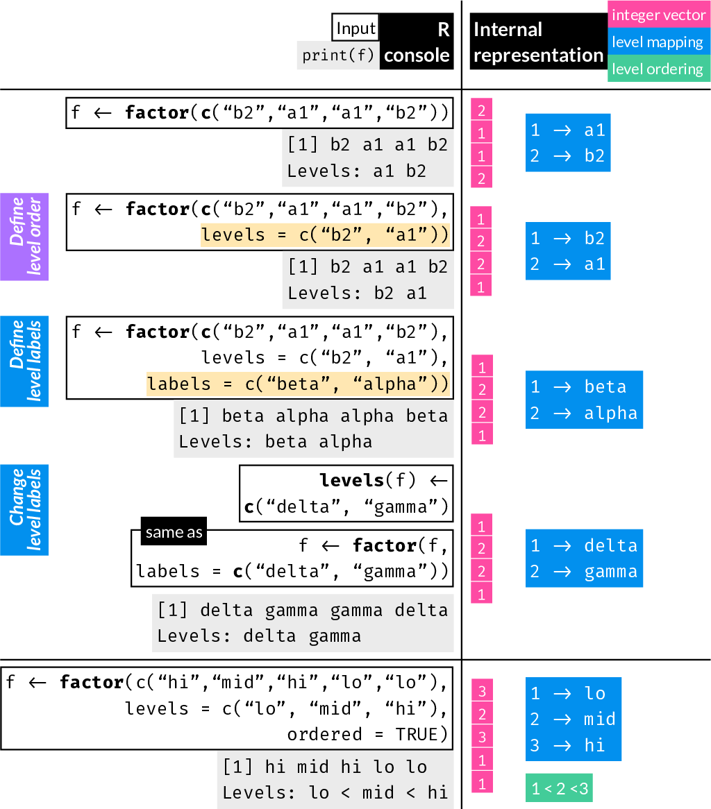

11 Factors
Factors in R are used to store categorical variables and therefore have many important uses in statistics / data science / machine learning.
For example, factors can be used to store information on sex, race, diagnosis, treatment group, etc.
If you are new to R and to factors, begin with the following introductory-level section.
11.1 Factors (introductory)
Note
Factors in R are a special type of vector.
Each element can take one value from a set known as the factor’s levels.
A factor’s levels are stored in a particular order, which affects how that factor is treated by some functions, e.g. in hypothesis testing, model fitting, visualization, etc.
You can specify whether or not the order of the levels defines a quantitative relationship such that level1 < level2, etc., in which case the factor is known as ordered.
You can create a factor by passing a numeric or character vector to factor() or to as.factor().
The difference between the two is that as.factor() does not accept any arguments while factor() does.
Let’s start with a character vector that includes three unique values - “a”, “b”, and “c”:
x <- c("a", "c", "b", "b", "a", "a", "b", "c")
x[1] "a" "c" "b" "b" "a" "a" "b" "c"Assume that “a”, “b”, and “c” define three different groups and we want to convert this character vector to a factor.as.factor() and factor() without any arguments produce the same output:
11.1.1 Create a factor
xf <- factor(x)
xf[1] a c b b a a b c
Levels: a b cclass(xf)[1] "factor"xftoo <- as.factor(x)
xftoo[1] a c b b a a b c
Levels: a b cclass(xftoo)[1] "factor"Notice how a factor is printed in the R console:
- The elements are printed without double quotes around them, differentiating them from character vectors.
- The factor levels are printed below the vector values.
11.2 (Cross) Tabulate factor levels
table() is a very useful function that, when applied to factors, counts the number of occurrences of each level:
table(xf)xf
a b c
3 3 2 It can also be used to cross-tabulate two factors. For example, let’s create two factors:
Then we can cross-tabulate them:
table(g1, g2) g2
g1 treated untreated
case 1 2
control 3 111.2.1 Set the order of factor levels
Let’s look at a different example. We define a factor to identify cases and controls:
[1] case control control case control
Levels: case control
Note
By default, the levels are ordered alphabetically.
You can define the order of the factor levels with the levels argument of the factor() function.
For example, the first factor level is used as the baseline in some statistical operations, e.g. glm(), in which case the “control” level should be first.
Many plotting functions order categorical axes’ labels using the level order.
[1] case control control case control
Levels: control caseThe levels argument can include values not present in the input data vector. This may be used for example when some known categories are not present in your sample, but may be added in the future, or you want specifically to show they are absent in a table or a plot, etc.
g <- factor(c("Type I", "Type III", "Type III", "Type I"),
levels = c("Type I", "Type II", "Type III"))
g[1] Type I Type III Type III Type I
Levels: Type I Type II Type IIIOn the other hand, if the levels argument is specified and does not include one or more of the values present in the input data vector, the corresponding elements become NA:
11.2.2 Define level labels
You can define level names or labels other than the values in the input vector using the labels argument:
Assume you started with the following character vector:
x <- c("female", "female", "male", "female", "male")You can attach different labels to each level rather than default to “female” and “male” by passing a character vector to the labels arguments:
The order of names in the labels argument must match the order of levels. In the above example, the levels default to c("female", "male") because they are sorted alphabetically if not specified. Otherwise, we can specify both the levels and labels arguments to define both order of levels and provide new labels:
11.2.3 Change level labels of existing factor
We can change the labels of a factor object
- using the
labelsargument of thefactor()command in the same way we create a factor from a character or other vector - using the
levels()command
Start with a factor of two groups and change labels using the factor() command:
[1] GroupA GroupB GroupB GroupA
Levels: GroupA GroupBStart with the same factor and change labels using the levels() command.
This is similar to using colnames() on a data.frame and is much faster than using factor() as above:
[1] A B B A
Levels: A B11.3 Factors (advanced)
Note
A factor is a vector A factor contains three crucial pieces of information:
The underlying integer vector
The mapping of integers to labels
Whether the factor is ordered
Let’s unpack these.
Begin with a simple factor:
[1] female female female male male
Levels: female maleInternally, the command sees there are two distinct labels, female and male, and defaults to assigning integer numbers alphabetically, in this case female has been mapped to ‘1’ and male to ‘2’.
Printing a factor prints the vector of labels followed by the levels, i.e. the unique labels.
11.3.1 The underlying integer vector
Each level is assigned an integer. (Internally, this is the “data” that forms the elements of a factor vector). You don’t see these integers unless you convert the factor to numeric (as.numeric()) or look at the (truncated) output of str();
as.numeric(x)[1] 1 1 1 2 211.3.2 The mapping of integers to labels
This defines which integer is mapped to which label, i.e. whether 1 is mapped to male or female. You can store the same information regardless which one you choose to call 1 and 2.
To get the mapping you can use levels(). It prints the labels in order:
levels(x)[1] "female" "male" Again, this means that female is mapped to 1 and male is mapped to 2.
str(x) Factor w/ 2 levels "female","male": 1 1 1 2 2The above tells you that x is a factor,
it has two levels labeled as “female” and “male”, in that order, i.e. female is level 1 and male is level 2.
The last part shows that the first five elements (in this case the whole vector) consists of three elements of level 1 (female) followed by 2 elements of level 2 (male).
11.3.2.1 Setting new level labels
You can use the levels() command with an assignment to assign new labels to a factor (same syntax to how you use rownames() or colnames() to assign new row or column names to a matrix or data frame);
xf <- factor(sample(c("patient_status_positive", "patient_status_negative"),
size = 10, replace = TRUE),
levels = c("patient_status_positive", "patient_status_negative"))
xf [1] patient_status_negative patient_status_negative patient_status_positive
[4] patient_status_positive patient_status_positive patient_status_negative
[7] patient_status_negative patient_status_negative patient_status_positive
[10] patient_status_negative
Levels: patient_status_positive patient_status_negative11.3.2.2 Defining the mapping of labels to integers
If you want to define the mapping of labels to their integer representation (and not default to them sorted alphabetically), you use the levels arguments of the factor() function.
The vector passed to the levels arguments must include at least all unique values passed to factor(), otherwise you will get NA values.
Without defining levels they are assigned alphabetically:
[1] alpha alpha gamma delta delta
Levels: alpha delta gammaDefine levels:
x <- factor(c("alpha", "alpha", "gamma", "delta", "delta"),
levels = c("alpha", "gamma", "delta"))
x[1] alpha alpha gamma delta delta
Levels: alpha gamma deltaThe table command has a number of useful applications, in it simplest form, it tabulates number of elements with each unique value found in a vector:
table(x)x
alpha gamma delta
2 1 2 If you forget (or choose to exclude) a level, all occurrences are replaced by NA:
[1] alpha alpha gamma <NA> <NA>
Levels: alpha gammaIf you know that more levels exist, even if no examples are present in your sample, you can includes these extra levels:
x <- factor(c("alpha", "alpha", "gamma", "delta", "delta"),
levels = c("alpha", "beta", "gamma", "delta"))
x[1] alpha alpha gamma delta delta
Levels: alpha beta gamma deltatable(x)x
alpha beta gamma delta
2 0 1 2 11.3.3 Is the factor ordered
We looked at how you can define the order of levels using the levels argument in factor(), which affects the integer mapping to each label.
This can affect how some applications treat the different levels.
On top of the order of the mapping, you can further define if there is a quantitative relationship among levels of the form level 1 < level 2 < ... < level n. This, in turn, can affect how the factor is treated by some functions, like some functions that fit statistical models.
Note
All factors’ levels appear in some order or other.
An ordered factor indicates that its levels have a quantitative relationship of the form level 1 < level 2 < ... < level n.
First an unordered factor:
[1] large small large medium small small large medium medium medium
Levels: large medium smallTo make the above into an ordered factor, we need to define the order of the levels with the levels arguments and also specify that it is ordered with the ordered argument:
[1] large small large medium small small large medium medium medium
Levels: small < medium < largeNote how the levels now include the less-than sign (<) between levels to indicate the ordering.
11.3.4 Change order of levels or labels
We’ve seen how to create a factor with defined order of levels and how to change level labels already. Because these are prone to serious accidents, let’s look at them again, together.
To change the order of levels of an existing factor use factor():
[1] target target control control control
Levels: control targetChange the order so that target is first (i.e. corresponds to 1:
[1] target target control control control
Levels: target controlTo change the labels of the levels use levels():
x[1] target target control control control
Levels: target control[1] hit hit decoy decoy decoy
Levels: hit decoy
Caution
Changing the levels of a factor with levels() does not change the internal integer representation but changes every element’s label.
11.3.5 Fatal error to avoid
Example scenario: You receive a dataset for classification where the outcome is a factor of 1s and 0s:
Some classification procedures expect the first level to be the ‘positive’ outcome, so you decide to reorder the levels.
You mistakenly use levels() instead of factor(x, levels = c(...)) hoping to achieve this.
You end up flipping all the outcome values.
All zeros became ones and ones became zeros.
Your model does the exact opposite of what you intended.
11.3.6 Factor to numeric
While it often makes sense to have factors with words for labels, they can be any character and that includes numbers (i.e. numbers which are treated as labels)
This behaves just like any other factor with all the rules we learned above.
There is a very easy trap to fall into, if you ever decide to convert such a factor to numeric.
The first thing that usually comes to mind is to use as.numeric().
# !don't do this!
as.numeric(f)[1] 1 2 2 3 1 1 3But! We already know this will return the integer index, it will not return the labels as numbers.
By understanding the internal representation of the factor, i.e. that a factor is an integer vector indexing a set of labels, you can convert labels to numeric exactly by indexing the set of labels:
levels(f)[f][1] "3" "7" "7" "9" "3" "3" "9"The above suggests that used as an index within the brackets, f is coerced to integer, therefore to understand the above:
levels(f)[1] "3" "7" "9"levels(f)[as.integer(f)][1] "3" "7" "7" "9" "3" "3" "9"# same as
levels(f)[f][1] "3" "7" "7" "9" "3" "3" "9"A different way around this that may be less confusing is to simply convert the factor to character and then to numeric:
[1] 3 7 7 9 3 3 911.4 Interactions
On many different occasions we want to look at factor interactions, e.g. for visualization, statistical hypothesis testing, predictive modeling, etc. Some functions allow you to define factors that should be allowed to interact and take of the rest for you. To explicitly create a factor interaction, you can use the interaction() function:
set.seed(2022)
dat <- data.frame(
PID = 8001:8009,
Sex = factor(sample(c("male", "female"), size = 9, replace = TRUE)),
Group = factor(sample(c("A", "B"), size = 9, replace = TRUE))
)
dat PID Sex Group
1 8001 female B
2 8002 male A
3 8003 female A
4 8004 male B
5 8005 male B
6 8006 female A
7 8007 female A
8 8008 male B
9 8009 female Adat["Sex_x_Group"] <- interaction(dat[["Sex"]], dat[["Group"]])
dat PID Sex Group Sex_x_Group
1 8001 female B female.B
2 8002 male A male.A
3 8003 female A female.A
4 8004 male B male.B
5 8005 male B male.B
6 8006 female A female.A
7 8007 female A female.A
8 8008 male B male.B
9 8009 female A female.A11.5 Summary
Note
Factors in R are essentially integer vectors with labels.
A factor’s internal integer values range from 1 to the number of levels, i.e. categories.
Each integer corresponds to a label.
To set order of levels:
factor(x, levels = levels_in_desired_order)to order levelsTo change labels:
levels(x) <- newlabelsorfactor(x, labels = newlabels)
Note
To avoid confusion, do not use numbers as level labels, if possible.